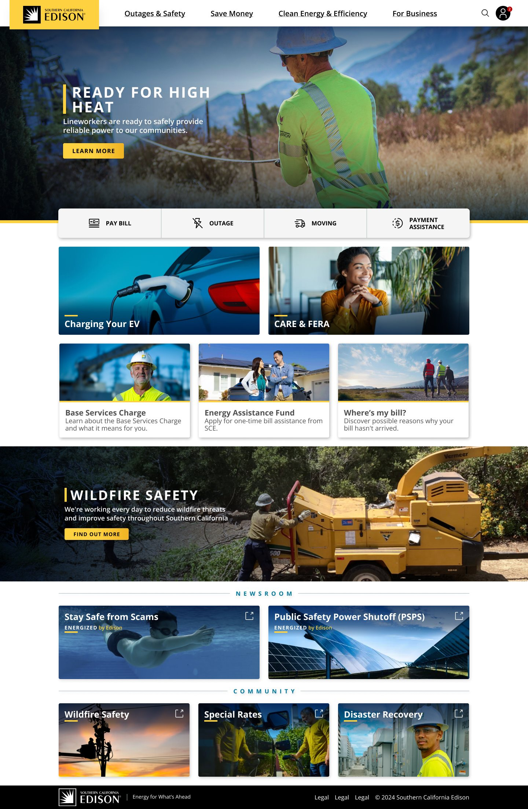
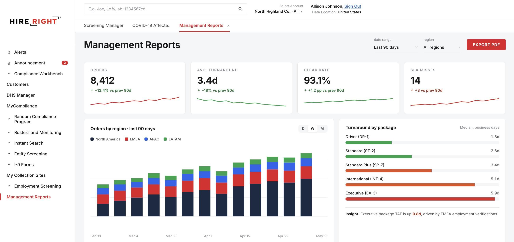
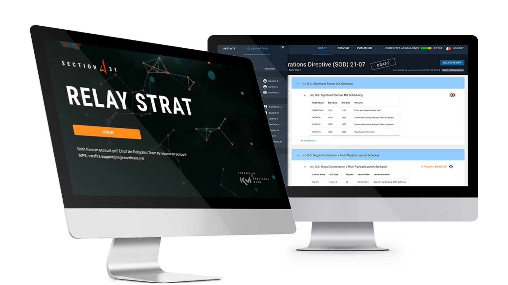
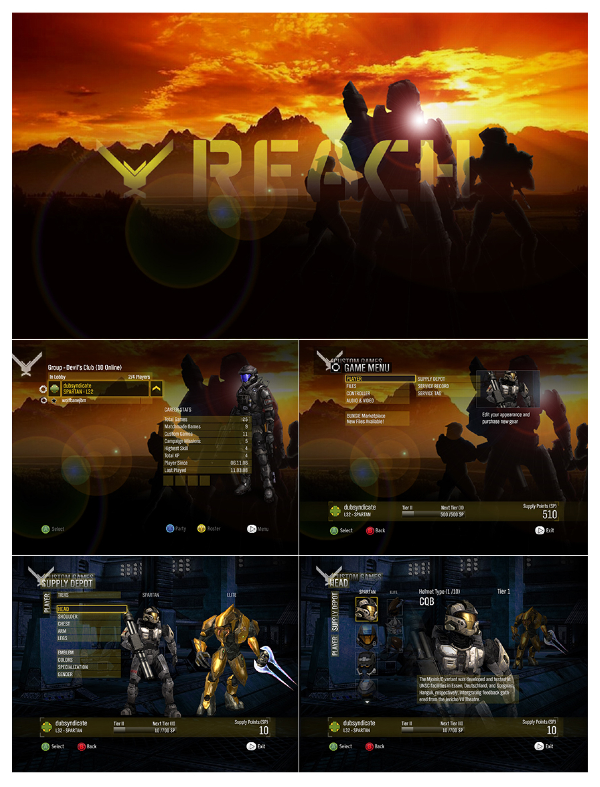

CaseStudy · 01 · In production

SCE.com Rebuilt.
Brand Overhaul · Design System
9 TemplatesLead
SCE.com serves 15 million people, and the site had drifted into a patchwork. I led the rebuild from the ground up: a modular template system that scales from outage alerts to clean-energy storytelling, built on a new design language, component library, and layout standards. One system, one source of truth.
Then I took it further and built the design system parent-down from Figma. Pixel-faithful components, a live Storybook, real tokens engineers could pull straight into code. The Figma file and the codebase, finally in sync.
Then I did the same for words. Built the Brand Voice Tool: real-time scoring across six brand dimensions, one-click AI rewrites, the whole Brand Copy Playbook baked right in. Anyone can ship on-brand copy without waiting on a reviewer. Both tools are live, links below.
padding 12 · radius 12 · Figma · Claude · Design Tokens
9 page templates and one component library now run SCE.com, with a live Storybook design system and Brand Voice Tool in production.
CaseStudy · 02 · Production

Screening Manager Reimagined.
SaaS Product · End-to-End Design
27 → 6Lead Product Designer
HireRight runs background checks for 40,000+ organizations, and its core screening tool had buckled under its own complexity. I led the rebuild end to end as Lead Product Designer, driving a team of three: research, competitor teardowns, and user interviews, then wireframes straight to production. I collapsed a tangle of order statuses into six states that read the same in Dallas or Düsseldorf, and turned the densest documents in HR into something a recruiter can scan in seconds.
padding 12 · radius 12 · Figma · Sketch · Prototyping
27 regional status labels reduced to 6, and adjudication review ~30% faster, on a platform used by 40,000+ organizations.
CaseStudy · 03 · In Use

Space Force Ops Tools.
Defense Tech · Mission-Critical UX
In UseProduct Designer · 2022
The US Space Force needed real software for the Space Tasking Cycle, not stock-photo UI. I ran 42+ operator co-design sessions and 88 usability sessions on the watch floor, not in a lab. The result is an SOD authoring tool that turns 12 document types into reusable, structured components. Shipped in 2022 and still in active use across the CFSCC mission set.
padding 12 · radius 12 · Figma · Sketch · User Research
Shipped in 2022 and still in use across the CFSCC mission set. Reviewer time-to-comment dropped from ~14 to under 4 minutes after 42+ operator co-design sessions and 88 usability tests.
CaseStudy · 04 · Shipped

Halo: Reach (2010) Menu UI (Schematic, for Bungie).
Game UI · Interaction Design
ShippedDesigner, Schematic · 2010
At Schematic, I designed menu systems and game UI for Halo: Reach as agency work for Bungie. Console-first and controller-driven, where a clumsy menu is the first thing a player feels.
padding 12 · radius 12 · Photoshop · Illustrator · After Effects
Menu UI shipped in Halo: Reach (2010), played by millions.